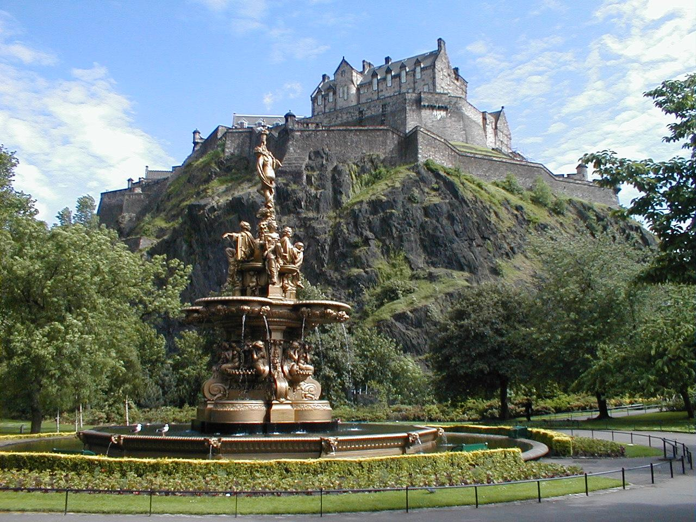
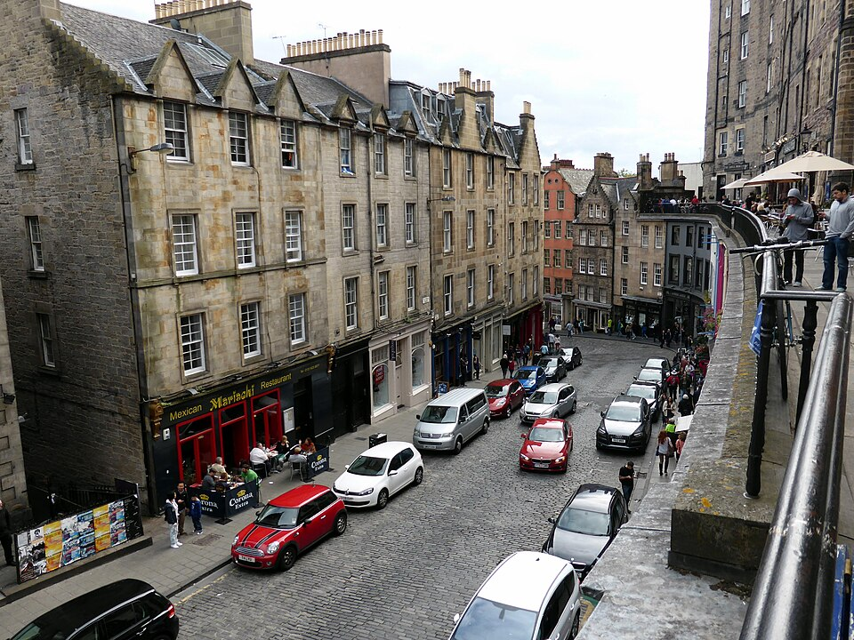
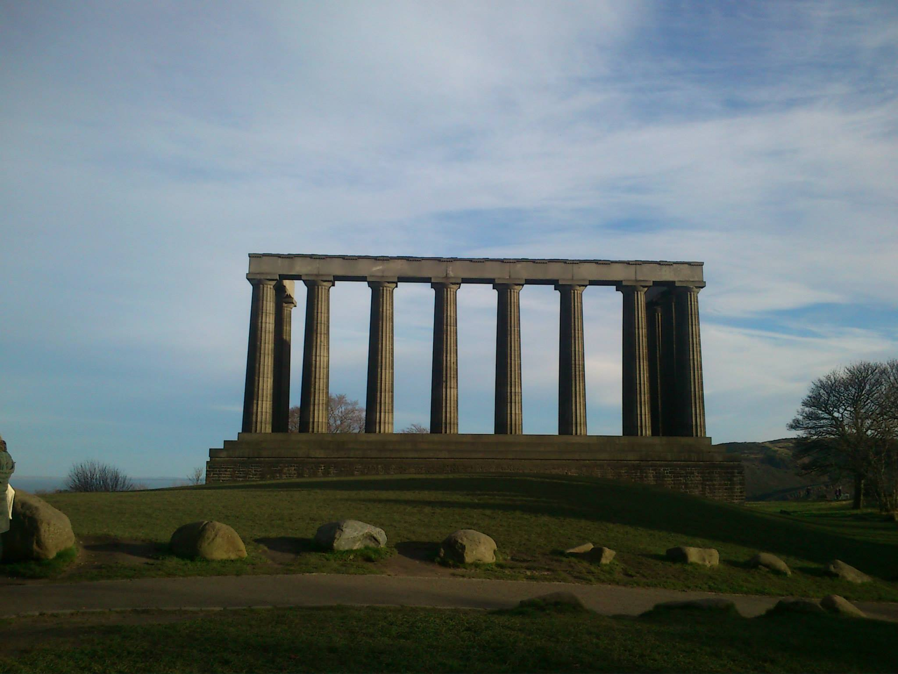

Spoj mračne istorije, magične arhitekture i neukrotive škotske prirode.
Edinburg je prestonica Škotske još od 15. veka i predstavlja jedan od najvažnijih istorijskih centara Evrope. Grad je podeljen na dve karakteristične celine: Stari grad (Old Town) sa srednjovekovnom mrežom ulica i Novi grad (New Town) sagrađen u stilu neoklasicizma u 18. veku.
Kroz vekove, Edinburg je bio poprište burnih kraljevskih sukoba, naučnih otkrića tokom škotskog prosvetiteljstva, ali i mračnih priča o duhovima, kugi i tajnim podzemnim tunelima.
Zbog svoje izuzetne arhitektonske i istorijske vrednosti, ceo centar Edinburga se nalazi pod zaštitom UNESCO-a.

Pređi mišem preko kartice da otkriješ tajnu lokacije! 💡
💡 Zanimljivost: Zamak leži na steni Castle Rock, koja je zapravo ugašeni vulkan star preko 350 miliona godina!

Magična šarena ulica
💡 Zanimljivost: Ova zakrivljena ulica sa šarenim fasadama bila je direktna inspiracija Dž. K. Rouling za stvaranje čuvene Dijagon-aleje u knjigama o Hariju Poteru.

Atena Severa
💡 Zanimljivost: Poznat po spomeniku koji podseća na Partenon. Zbog ove arhitekture Edinburg je dobio nadimak "Atena Severa".
Spremite se za sve četiri sezone u jednom danu! Kišobran i udobne patike za hodanje po kaldrmi su obavezni.
U avgustu se održava Edinburgh Fringe, najveći festival umetnosti na svetu, kada ulice ožive hiljadama izvođača.
Popnite se na brdo Arthur's Seat ili Calton Hill za neverovatan panoramski pogled na ceo grad i more.